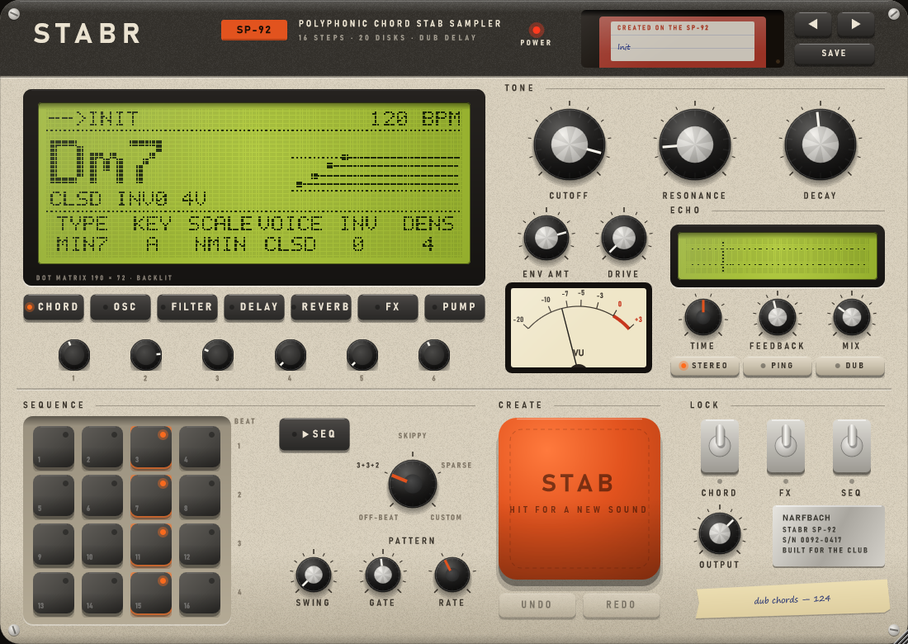

STABR
House & techno stab machine · by Narfbach · User manual for version 0.8
1. Welcome
STABR turns one key into a short, punchy chord with character: the stab of house and techno. It is not a general-purpose synthesizer. Every control is there to answer one question: does this help you get a club-ready stab in under 30 seconds?
Press a key and STABR builds a whole chord in your song's key, runs it through a synth voice, a dub delay and a reverb, and can even play it rhythmically on its own, locked to your DAW.
2. Installation
- Run the installer
STABR-0.8.0-Windows-x64-Setup.exeand follow the steps. - The plugin is installed to
C:\Program Files\Common Files\VST3\STABR.vst3, the standard VST3 folder every DAW scans. - Open your DAW and rescan plugins if STABR doesn't appear. It is listed as an instrument by Narfbach.
Requirements: Windows 10 or 11, 64-bit, and a VST3 host (FL Studio, Ableton Live, Bitwig, Cubase, Reaper, Studio One…).
3. Your first stab in 30 seconds
- Load STABR on an instrument track.
- Press any key. You hear a minor seventh chord in A minor, the default key.
- Set Key and Scale to your song. Now every key you press gives a chord that belongs to it: you can't play a wrong chord.
- Press the big orange STAB pad. You get a new, verified sound at the same loudness as before. Press again until one grabs you.
- Turn on ▶ SEQ and press play in your DAW. STABR plays the off-beat by itself.
4. The interface

STABR looks and works like a piece of hardware: the SP-92, a chord stab sampler. Everything you see is a control.
Top strip
- POWER: the setup menu. Pick the finish (Beige '87, Graphite '92 or Arctic '89), the interface size from 75 % to 200 %, or write on the tape. You can also drag the bottom-right corner. Finish and size are saved with your project.
- Disk drive: click the floppy to open the sound list, grouped by style. The disk colour tells the style: blue House, black Techno, red Rave, green World, yellow Bass, purple Atmos, cream for your own disks.
- ◀ ▶: previous and next sound. Save: stores the current sound as a user disk.
Display, function keys and encoders
- The dot matrix display shows the sound name, the tempo and, on the CHORD page, the name of the chord you're actually hearing with its notes placed by pitch, so you can see the voicing and which note is in the bass.
- The seven function keys open the pages: CHORD, OSC, FILTER, DELAY, REVERB, FX, PUMP. Press the lit key again to go to the next sub-page. Each page draws a graph of what it controls: waveform, filter response, echoes, reverb tail, saturation curve, pump shape.
- The six encoders below control the six values on the bottom row of the display. When you turn any knob, the display shows its exact value for a moment.
Tone and Echo
- Tone: the controls you touch the most. Cutoff, Resonance and Decay, plus Env Amt and Drive.
- Echo: the small display shows every echo in time (left to right) and in the stereo field (L on top, R below), and lights them up as they happen. Below: Time, Feedback and Mix, and the three mode keys Stereo, Ping, Dub.
- VU meter: output level.
Sequence, Create and Lock
- 16 pads: one row per beat. See the sequencer.
- ▶ SEQ turns the sequencer on; the Pattern switch picks the rhythm; Swing, Gate and Rate shape it.
- STAB: generates a new sound, and the knobs turn to it. See Create STAB.
- Undo / Redo: step back and forth through sound changes (presets, Create STAB).
- LOCK Chord / FX / Seq: flip a switch up to keep that part untouched by STAB.
- Output: output level. The tape: double-click it and write your track's name.
Handy gestures
| Gesture | Does |
|---|---|
| Drag a knob up/down | Changes its value |
| Double-click a knob | Resets it to its default |
| Tab / arrow keys | Moves between controls and changes the focused one |
5. The chord engine
One key, one chord
Chord Type picks the recipe: Power, Major, Minor, Sus2, Sus4, Min7, Maj7, Min9, Maj9, Min11, 6/9, Add9, Dim7.
Scale Lock
| Mode | What happens |
|---|---|
| Diatonic (default) | The key you press is moved to the nearest note of the scale, and the chord is built from scale notes. The chord quality follows the key, just like a real progression. In A minor with Min7: A gives Am7, B gives Bm7b5, C gives Cmaj7, D gives Dm7, E gives Em7, F gives Fmaj7, G gives G7. |
| Literal | The root is moved into the scale, but the chord is exactly the type you chose. It may clash with the key, and that can be the point. |
| Off | No key at all: the chord type is built on whatever key you press. |
Power and Dim7 always keep their exact intervals, because their identity is their intervals.
Shaping the chord
- Voicing: Closed, Open, Drop 2, Drop 3.
- Inversion: moves the lowest notes up an octave, changing the bass note.
- Spread: pulls the voices apart by up to 3 octaves.
- Density: how many notes, from 2 to 7. When notes are removed, the fifth goes first, so a Min7 with 3 notes keeps its character.
- Octave Down: adds the root one octave below.
Note Mode
- Chord (default): every key makes a chord.
- Passthrough: keys play exactly as you play them. Use it for your own chords.
- Auto: one key makes a chord, several keys pressed together play as they are. To tell them apart STABR waits 20 ms, and reports that latency to your DAW, which compensates it.
Polyphony counts chords, not notes: how many stabs can overlap. Bend sets the pitch-bend range.
6. Shaping the sound
Oscillators (OSC page)
- Osc 1 and Osc 2: Saw, Pulse, Triangle, Organ (an M1-style organ) or Sine. Osc 2 adds Detune and Octave.
- PW: pulse width, for the Pulse wave.
- Sub: an extra oscillator one or two octaves below.
- Unison: up to 7 detuned copies per note, spread across the stereo field. Rnd Phase randomizes where each copy starts.
Filter (Tone section and FILTER page)
- Type Low Pass, Band Pass, High Pass, and Slope 12 or 24 dB/oct.
- Resonance can self-oscillate at the top of its range, safely.
- Env Amount is bipolar: positive opens the filter on each hit (the classic click), negative closes it.
- Key Track opens the filter for higher notes. Velocity opens it for harder hits. Reso Tame keeps loud resonance peaks in check.
Envelopes and drive
Amp and filter envelopes are ADSR. Defaults are deliberately short: a stab has to be short. Drive adds warm, asymmetric distortion before the filter. HQ Mode doubles the oversampling of the drive: it's meant for final renders, since it uses much more CPU.
7. Effects
Signal flow: Saturation → Chorus → Delay (these three can be reordered with Order) → Reverb → Pump → Output.
Delay: the most important block
- Time: synced divisions including triplets (T) and dotted (.) values. 1/8. is the classic dub-techno delay. With Sync off, use Time ms.
- Mode: Stereo, Ping Pong, or Dub (saturation and a band-pass inside the feedback loop, like a worn tape).
- Feedback and Mix.
- HP / LP: filters inside the feedback loop. Every repeat gets darker and thinner, which keeps a mix clean.
- Duck: lowers the echoes while the dry stab plays, so the repeats live in the gaps.
- Freeze: holds whatever is in the delay forever. Play over it.
- Wow (tape wobble), Offset R (right channel slightly later, for width), Time Change (Tape glides in pitch when you change the time, Digital jumps).
Reverb
Plate, Room or Hall, with Size, Decay, Damping, Mod, Pre-Delay (free or synced), Low Cut, Duck and Mix.
Saturation and chorus
Saturation types: Tape, Transistor, Diode, and Bitcrush (with bit depth and sample-rate reduction). Chorus is a Juno-style two-line chorus, or a four-line Ensemble.
Pump
A built-in sidechain that ducks everything, tails included, locked to your DAW's position: it always lands on the beat, even if you start playback mid-song. Rate, Depth, Shape and Attack.
Output
- Width: from mono to extra wide.
- Mono Below: everything under this frequency is summed to mono, as a club system needs.
- Limiter: a soft safety limiter. Output: final level.
8. The sequencer
Turn on ▶ SEQ and press play in your DAW: STABR plays the pattern by itself, perfectly in time. It follows your transport. It starts, stops, loops and jumps with it, and a render sounds exactly like playback.
What it plays (latch)
- With nothing played yet, it plays the chord of your key's tonic.
- Press a key and release it: the pattern now plays that chord, and keeps playing it.
- Press several keys together (in Passthrough mode) and it sequences your hand-played chord.
- While the transport runs, keys choose the chord but don't trigger extra hits. While it's stopped, keys play live.
Controls
- Pattern: Off-beat 8ths, 3+3+2, Skippy 16ths, Sparse Techno, or Custom. Factory patterns can be switched and automated freely.
- Rate: 1/32 to 1/4, with triplets. Length: 1 to 16 steps; shorter lengths create polyrhythms. Swing: 50 % (straight) to 75 %. Gate: how long each note is held.
Editing steps
| Action | Result |
|---|---|
| Click a step | Turns it on or off |
| Drag up/down on a step | Velocity |
| Right-click a step | Ratchet (x2, x3) and probability (100 / 75 / 50 / 25 %) |
| Space · ↑↓ · ←→ · R | Toggle · velocity · next step · cycle ratchet |
Editing a factory pattern copies it into Custom first, so you never start from an empty grid and never overwrite a factory pattern. Probability is random but repeatable: the same bar of your song always plays the same way, in playback and in a render.
In the standalone app there is no transport, so the sequencer runs freely from step 1.
9. Presets and Create STAB
Factory presets
Twenty sounds, each with a clear purpose, all calibrated to hit at the same loudness, so you can compare them fairly.
| Style | Presets |
|---|---|
| House | Classic Organ Stab · Deep Min9 · Garage Swing · French Filter · Lo-Fi House · Disco Brass Hit · Detroit Strings |
| Techno | Dub Techno Chord · Acid Chord · Industrial Hit · Hypnotic Sparse · Peak Time Stab · Minimal Blip |
| Rave | Rave Power Stab · Hardcore 92 · Trance Gate |
| World, Bass, Atmos | Afro Pluck · UK Bass Stab · Ambient Wash · Echo Chamber |
Garage Swing, Hypnotic Sparse, Trance Gate and Afro Pluck turn the sequencer on: the rhythm is part of the sound.
Your presets
Save writes a .stabrpreset file to Documents\Narfbach\STABR\Presets. You can copy these files to another computer or share them. Uninstalling STABR never deletes them.
Create STAB
Create STAB doesn't just randomize every knob, which almost always sounds like noise. It works like a sound designer:
- It picks a style (organ, deep, dub, rave, pluck, acid, lo-fi, atmos or brass) and chooses every setting within ranges that make sense for it, with the settings related to each other: a closed filter gets more envelope, high resonance gets less drive, long feedback gets a darker loop.
- Before you hear it, the sound is rendered and checked: it must be audible, not clip, keep the bass mono and not leave a muddy tail. Anything that fails is discarded.
- It's set to the same loudness as every preset, so a new sound never seems better just for being louder.
- It's compared with the factory presets and with every sound generated in your session. If it's too similar to any of them, it's discarded and another one is made.
It takes a fraction of a second. Undo brings the previous sound back. Your key and scale never change, and neither does whether the sequencer is on. Use the LOCK switches to keep the chord, the effects or the sequencer as they are.
10. Recipes
Dub techno
Load Dub Techno Chord, or build it: Min7 with Density 3, Cutoff around 750 Hz with Env Amount near 60 %, Delay Mode Dub at 1/8. with Feedback 65 % and LP around 3 kHz, Reverb Hall with Mix 30 %. Play one key every two bars and let it dissolve. Hit Freeze at the peak.
Garage groove
Organ wave, Min9, ▶ SEQ on with Skippy 16ths, Swing about 60 %, Gate 35 %, a short ping-pong delay.
Club safety
Keep Mono Below at 120 Hz or higher and the Limiter on. Use Pump on quarter notes if you don't have a sidechain set up.
11. Troubleshooting
| Problem | Solution |
|---|---|
| STABR doesn't appear in my DAW | Rescan plugins and check that C:\Program Files\Common Files\VST3 is in your DAW's VST3 folders. |
| With ▶ SEQ on, pressing keys doesn't trigger sound | That's by design while the transport is running: keys choose the chord and the pattern plays it. Stop the transport to play live. |
| Everything sounds slightly late | You're in Note Mode Auto, which needs 20 ms to detect chords. Your DAW compensates it; for live playing use Chord or Passthrough. |
| High CPU | Drive and unison are the costliest settings, and HQ Mode much more. Lower Polyphony or turn HQ Mode off while producing. |
| Create STAB did nothing | It ignores clicks while a sound is being generated. Wait until the display stops showing CREATING. |
12. Specifications
| Format | VST3 instrument, Windows 10/11 64-bit |
| Sample rates | 44.1 to 192 kHz |
| Latency | 0 samples (20 ms in Note Mode Auto, reported to the host) |
| Parameters | 163, all automatable |
| Factory content | 20 presets, 4 rhythm patterns |
STABR © Narfbach. VST is a registered trademark of Steinberg Media Technologies GmbH.